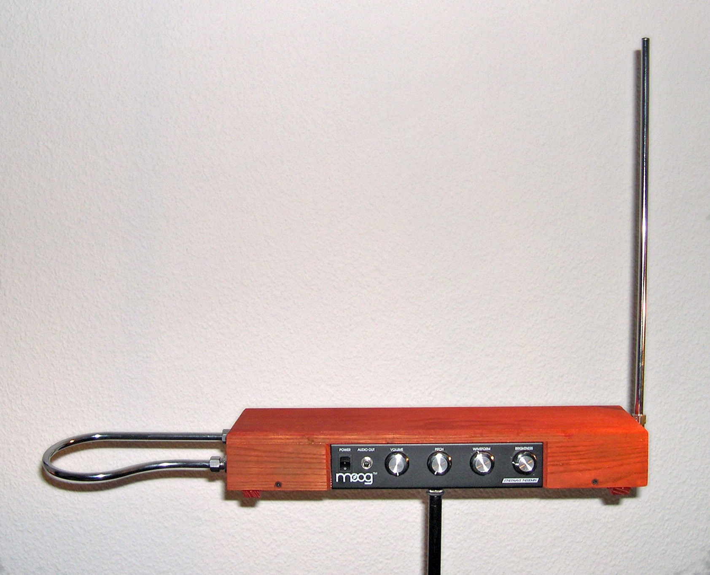

Theremin
Instrumento eletrônico controlado sem contato físico. O músico movimenta as mãos próximas às antenas para alterar frequência e volume. É conhecido pelo som futurista usado em filmes e músicas experimentais.
Instrumentos modernos, eletrônicos e experimentais que expandem os limites da música.

Instrumento eletrônico controlado sem contato físico. O músico movimenta as mãos próximas às antenas para alterar frequência e volume. É conhecido pelo som futurista usado em filmes e músicas experimentais.
Instrumento eletrônico capaz de criar e modificar sons digitais. Muito utilizado na música eletrônica, pop e trilhas sonoras. Permite a produção de inúmeros timbres diferentes.
Instrumento musical de teclas e foles, também conhecido como sanfona. O som é produzido pela passagem de ar através de palhetas internas. Muito presente na música regional e folclórica.